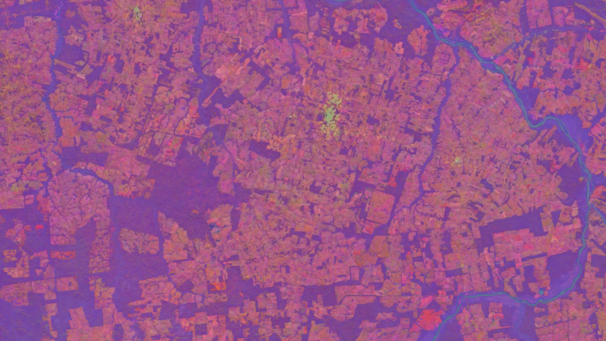
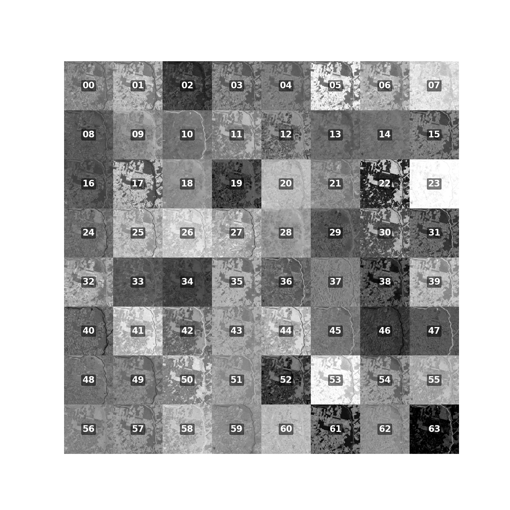
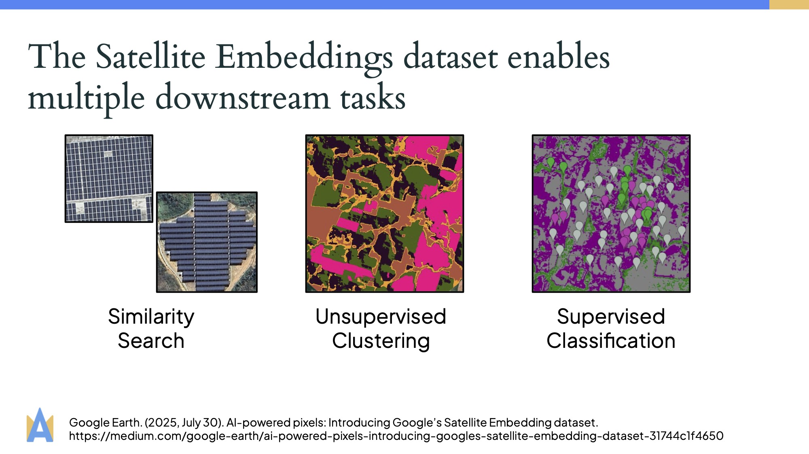

Why AlphaEarth?
For millenia, humans have stared into the night sky curious about space - but quite recently we’ve gotten the tools to look back onto the Earth.
However, the amount of data has become a challenge. In the 1970’s, the Landsat 1-3 satelittes on-board storage capacity was 3.75 GB per orbit. Today, Landsat 7 and 8 collect 1,200 scenes, equivalent to 1 TB of data, every 24 hours1, adding 3 TB of landsat products2.
AlphaEarth Foundations is Google DeepMind’s latest geospatial foundational AI model trained to assimilate thousands of image bands
The model is trained on 3 billion individual image frames sampled from over 5 million locations globally3. Some of the data bands include
- Optical and thermal imagery
- Radar data
- 3D surface measurements
- Climate properties
- Gravity fields
- Geo-located descriptive text
- …and more
Through training, the model can compress all of this data into 64 numbers for each 10mx10m location, ready for downstream analysis.
The Google DeepMind team open released the Satellite Embedding V1 Dataset, which contains annual 64-dimensional embeddings between 2017-2024 at a 10m resolution4.
What are Satellite Embeddings?
In essence, the thousands of data bands are compressed into 64 bands that together is called a satellite embeddings.

You can think of the embeddings as new satellite embedding coordinates that locates each point on Earth on a 64-dimensional sphere. These embeddings are constructed such that similar points (such as locations with solar panels) have embeddings pointing to locations close together on the sphere, while different points (such as solar panels vs. forest) have embeddings that point to different locations on the sphere.
What’s special is that the embeddings capture similarities and difference both across space and time.
This means that it is possible to track changes in the same patch of land just by looking at the evolution of the embedding.
The indication of similarity between two spatio-temporal locations is then the angle between the satellite embedding coordinates.
A popular similarity metric is the cosine similarity score, taking the cosine of the angle between the vectors.
\[ \cos(\theta) = \frac{\mathbf{a} \cdot \mathbf{b}}{|\mathbf{a}||\mathbf{b}|} \]
The embedding coordinates in the AlphaEarth Foundation Satellite Embeddings dataset have already been normalized to have unit length (a length of one). Therefore, the cosine similarity simplifies to just the dot product between the embedding vectors. This is very efficient to compute.
\[ \cos(\theta) = \mathbf{a} \cdot \mathbf{b} \]
Visualizing the cosine similarity, it is possible to highlight areas that are either very similar or very different.
What can we use Satellite Embeddings for?
Since the satellite embeddings contain a combination of thousands of data layers, they contain very rich semantic information about the relationship between locations on Earth.
In fact, AlphaEarth achieves state of the art results on many benchmarks, with the authors repororting on average 24% lower error rates compared to other models tested5.
Some downstream tasks highlighted by the authors include similarity search, unsupervised clustering, and supervised classification3.

Moreover, what makes these embeddings so powerful is that they support continuous time6.
Traditional data products are discrete in time due to satellite only passing over a patch of land at discrete points in time. But AlphaEarth is trained to interpolate between these.
These tasks can help with applications such as tracking deforestation and urban expansion, categorizing agricultural lands to aid in food security, and help model water resources.
What are the limitations?
The Satellite Embedding dataset still has its fair share of limitations, including:
- Less interpretable features: The new 64 bands don’t have a direct physical meaning. This means it can be hard to interpret predictions and feature importance.
- Only 2017-2024: The V1 dataset only goes back to 2017, limiting studies going further back in time.
- Mostly land-focused: Many original data sources have limited data over the ocean, also impacting the embeddings.
- Limited coverage at the poles: The dataset also has limited quality around the poles.
Resources
If you are curious to learn more, the Google DeepMind team has curated a collection of excellent resources and tutorials.
Moreover, the Google DeepMind team is currenlty offering a series of small grants to researchers using the Satellite Embedding dataset.
Conclusion
The AlphaEarth Foundations geospatial foundation model marks a pivotal moment for geospatial analysis.
I am very excited to explore the applications of this model!
Take care! 🥳
References
Citation
@online{heiman2025,
author = {Heiman, Alice},
title = {AlphaEarth: {A} {Peek} into the {Potential} of {Geospatial}
{Satelitte} {Embeddings}},
date = {2025-08-09},
url = {https://aliceheiman.github.io/posts/alphaearth-intro},
langid = {en}
}